O ex-presidente do Bradesco Luiz Carlos Trabuco aceitou o convite para comandar o Ministério da Fazenda no próximo mandato, informou o Planalto. O atual ministro, Dario Durigan, desejou "bom trabalho" ao sucessor. A B3 ganhou 10.115 pontos no dia, puxada por bancos. Págs. 2 e 4.
O IPCA-15 subiu 0,22% em novembro, abaixo dos 0,34% esperados, e os prefixados do Tesouro voltaram a pagar menos de 15% ao ano. O Copom decide a Selic, hoje em 13,75%, em 8 e 9/12. Págs. 4 e 20.
Anders Celsius nasceu em 27/11/1701. No Ceará, seguem as máximas de até 41 °C sem chuva. Págs. 3 e 6.
🛍️ Black Friday hoje: sites falsos lideram os golpes e a IA deixa a isca mais convincente. Regra das 72 h. Págs. 18, 19 e 21.
🧠 Stanford descreve 3 biotipos cerebrais em crianças com TDAH e/ou ansiedade (24/11). Pág. 31.
💊 Sedação e delirium na UTI · delirium no idoso · bexiga no ultrassom · digitálico · relação I:E (8–10) · 🤝 Humanitário (32).
A escolha. Em nota divulgada na noite de quinta (26), o Palácio do Planalto confirmou que Trabuco, presidente do Conselho de Administração do Bradesco, aceitou o convite para comandar a Fazenda no quarto mandato do presidente Lula. O aceite ocorreu numa reunião no Palácio da Alvorada, no fim da tarde (Sampi e CNN Brasil, 26/11). Ele assume em 2027; até lá, o atual ministro, Dario Durigan, permanece na pasta.
Quem é. Trabuco entrou no Bradesco em 1969 como escriturário, presidiu o banco de 2009 a 2018 e, desde então, comanda o conselho. Em 2014, recusou convite semelhante do governo Dilma Rousseff. (CNN Brasil).
Repercussão. Durigan desejou "bom trabalho" e ofereceu a equipe para a transição. O vice-presidente Geraldo Alckmin (PSB) chamou a escolha de boa notícia para o país. Os presidentes do Senado, Davi Alcolumbre, e da Câmara, Hugo Motta, prometeram diálogo com a nova gestão. Paulo Pimenta (PT-RS), líder do governo na Câmara, citou os compromissos de campanha. A CNN relatou que uma ala majoritária do PT teme a repetição do "efeito Levy", referência ao ministro de 2015.
Pacote fiscal. A página oficial do Congresso agora registra o PLP 299/2026 como transformado na Lei Complementar nº 239, de 24/11/2026. A lei altera o arcabouço fiscal (LC 200/2023): amplia bloqueios de despesa quando houver risco à meta, limita benefícios tributários e dá 120 dias ao Congresso para examinar medidas sobre supersalários.
STF e o piso. Por maioria, o plenário decidiu na quinta (26) que estados, DF e municípios devem pagar o valor atualizado do piso nacional do magistério, mesmo sem lei local; se não ajustarem até o fim do exercício, a Justiça pode determinar o pagamento. O piso vale para o vencimento inicial, e os reflexos na carreira dependem de lei de cada ente, com apelo para regulamentação em 24 meses. A tese seguiu o voto do ministro Dias Toffoli; ficaram parcialmente vencidos Cristiano Zanin, Gilmar Mendes e Edson Fachin (Migalhas, 26/11).
O salário inicial da carreira não pode ficar abaixo do piso atualizado pelo governo federal. Aumento automático para as outras faixas, não: isso depende de lei estadual ou municipal.
1º/12: PL das estatais no Senado. 8 e 9/12: Copom. Outros ministros: nenhum anúncio oficial até o fechamento.
A nº 020 disse que ainda não havia lei publicada para o pacote fiscal. O registro do Congresso, consultado em 26/11, já indica a Lei Complementar nº 239, datada de 24/11.
O jornal não toma partido. Publica fatos, números oficiais e declarações atribuídas, com o mesmo tratamento a todos os lados.
Calor. A Funceme não registrou chuva entre a manhã de quarta (25) e a de quinta (26); a última foi na terça, 10 mm no Crato. O tempo firme segue ao menos até hoje, com máximas de 32 °C a 41 °C; Jaguaribe marcou 39,5 °C. Em Fortaleza, a previsão é de até 35 °C e mínimas de 27 °C a 28 °C até sábado (O Povo e GCMais, 26/11).
El Niño e saúde. O plano estadual da Sesa para seca e escassez hídrica, válido até julho de 2027, lista os riscos: arboviroses, desidratação e insolação, piora de doenças crônicas, como infarto, crises respiratórias e doenças diarreicas. A pasta se prepara para mais atendimentos (Diário do Nordeste, 26/11). A quadra chuvosa de 2027 pode ficar abaixo da média.
Mpox. Pelo IntegraSUS de quarta (25), o Ceará tem 230 casos confirmados em 20 cidades, 789 notificações e 329 em investigação. Fortaleza concentra 190 (82,6%); depois vêm Caucaia (9) e Sobral (7). O pico diário foi em 13/11, com 17 confirmações. A maioria é de homens de 24 a 51 anos (Diário do Nordeste, 26/11).
Câmara de Sobral. O procurador-geral de Justiça deu parecer favorável, na quinta (26), à liminar numa ação direta de inconstitucionalidade contra a eleição da Mesa Diretora para 2027–2028, feita em 13/06/2026, que reconduziu o vereador Chico Jóia Júnior (União Brasil). O parecer cita a posse prevista para 1º/01/2027; a decisão cabe ao Judiciário (Sobral em Revista).
Contas em dia. A Enel Ceará abriu ontem renegociação de contas vencidas há mais de 60 dias: até 12 parcelas, com entrada de 30%, até 31/12, nas lojas da empresa.
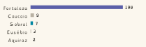
Hoje, 8h–12h: último dia do Refis na Praça de Cuba com 100% de desconto em multas e juros de mora sobre débitos municipais (Secretaria das Finanças).
Sol forte e ar seco: água em horários marcados, sombra entre 10h e 16h, nada de queimar lixo ou mato, e atenção redobrada aos vizinhos idosos.
Bolsa. Foi a maior alta diária desde 5/10, pregão seguinte ao 1º turno (+7,70%). Catorze ações subiram mais de 10%: MRV (+15,37%), Localiza (+15,18%) e RD Saúde (+13,16%) lideraram; Banco do Brasil ganhou 12,59%, Bradesco 11,56% e a B3 10,84%. Petrobras subiu 4,42% e Vale 3,22%. O índice de small caps avançou 6,80% (InfoMoney e Brasil em Folhas, 26/11).
Juros. A curva de DI caiu em todos os vencimentos: o de janeiro de 2031 recuou 0,545 ponto, a 14,335%. O minidólar de dezembro fechou a 5.656 pontos, sinal de abertura com real mais forte hoje (InfoMoney).
Inflação. O IPCA-15 subiu 0,22% em novembro, após 0,32% em outubro; em 12 meses, 4,64%, ainda acima do teto da meta (4,5%). Pesaram tomate (+38,92%) e cebola (+17,43%); aliviaram passagens aéreas (−9,57%), gasolina (−1,23%) e energia, com bandeira verde (CNN Brasil, 26/11).
Contas externas. O déficit em conta corrente foi de US$ 3,966 bilhões em outubro, pior que os US$ 3,1 bilhões esperados; em 12 meses, 2,34% do PIB. O investimento direto no país somou US$ 9,086 bilhões, acima da previsão (Banco Central, via IstoÉ Dinheiro).
Petróleo. Depois de subir 3,5% na quarta, o Brent recuava 0,87%, a US$ 93,79, na tarde de quinta, com minas relatadas em Ormuz. Pág. 5.
Hoje. PNAD Contínua e IGP-M de novembro. Copom: 8 e 9/12.
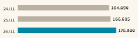
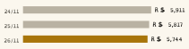
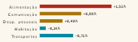
Bruxelas. No Conselho Europeu extraordinário de 26 e 27/11, sete países "frugais", entre eles Alemanha e Países Baixos, recusaram o formato de negociação do orçamento de 2028–2034 proposto por António Costa. Emmanuel Macron disse que a França não negocia o tema depois de 31/12. Costa confirmou que Eslováquia, Hungria e República Tcheca não apoiaram o empréstimo de € 45 bilhões à Ucrânia; a Bulgária só aderiu à parte civil. "Voltaremos ao tema em dezembro", disse (Euronews, 26/11).
Ucrânia. A Força Aérea relatou mísseis balísticos e 113 drones; 87 foram neutralizados. Em Kharkiv, um casal morreu; em Kiev, 7 ficaram feridos. Drones ucranianos atingiram a termelétrica e a química Azot de Nevinnomyssk e a estação de bombeamento de Subkhankulovo, na Bashkortostan. Moscou diz ter derrubado 343 drones; nada foi verificado de forma independente.
Diplomacia. O enviado americano Jared Kushner diz que a maior troca de prisioneiros da guerra sai "antes das festas". Donald Trump e Mark Rutte, da Otan, pediram que a Rússia não amplie o conflito.
Kuwait e Ormuz. O Ministério da Defesa do Kuwait diz ter interceptado drones vindos do Irã; os destroços mataram dois italianos que faziam manutenção de radares; Teerã não assumiu a autoria. A agência britânica UKMTO relatou dois petroleiros atingidos por projéteis não identificados, sem feridos, e soma 17 navios-tanque atingidos no estreito desde 1º/11; a Guarda Revolucionária afirma que bateram em minas ao cruzar sem autorização iraniana (agências, 26/11).
Península Arábica. A coalizão liderada pela Arábia Saudita acusou os houthis de atacar a refinaria de Jazan e prometeu resposta. Autoridades houthis dizem que bombardeios sauditas mataram 4 pessoas em Taiz, entre elas uma criança (AP).
Gaza. Ataques israelenses mataram 10 pessoas na madrugada de quinta, segundo hospitais locais. O governo de Israel disse ter matado Khaled Abu Nada, dirigente do Hamas (AP, 26/11).
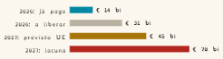
Ras Tanura fica no Golfo, a poucas horas de navio de Ormuz; Jazan, no Mar Vermelho, perto da fronteira com o Iêmen. Um oleoduto Leste–Oeste de cerca de 1.200 km leva petróleo saudita até Yanbu, rota que evita Ormuz. Contexto
O Brent para fevereiro fechou em alta de 1,13%, a US$ 91,97 (Money Times); o contrato de janeiro chegou a cair 0,87% durante o dia. O WTI não teve fechamento por causa da Ação de Graças. A Opep+ se reúne em 29/11 para definir a produção de 2027.
29/11: Opep+ decide a produção de 2027. 2/12: chanceleres da Otan. Dezembro: UE volta ao empréstimo e ao orçamento.
Alegações de governos e grupos armados aparecem atribuídas. O jornal não toma partido.
Marinheiros, liderados por João Cândido, tomaram navios no Rio contra os castigos com chicote. A anistia de 27/11 encerrou a revolta, mas dias depois muitos anistiados foram expulsos ou presos. A revolta virou marco do fim da chibata na Marinha.
A escala original de Celsius era invertida: 0 era a fervura da água e 100, o congelamento; foi virada após a morte dele. Leidenfrost descreveu a gota que "dança" na chapa quente sobre um colchão de vapor. Hoje, com o Ceará perto de 40 °C, termômetro é ferramenta de triagem.
1) Que fisiologista batizou a sinapse? 2) Em que cidade a França afundou a frota em 1942? 3) Que sonda tocou Marte primeiro? 4) Como era a escala original de Celsius? 5) Quem liderou a Revolta da Chibata?
Atlas Tumoral. Lançado na quinta (26), no Rio, o Atlas Tumoral da População Brasileira reúne dados genéticos, clínicos e demográficos de pacientes e a evolução dos tumores. É o primeiro repositório do gênero na América Latina, com R$ 8,7 milhões do programa Genomas Brasil. A proposta é usar inteligência artificial para achar marcadores de diagnóstico precoce e de resposta a tratamento numa população geneticamente diversa (Ministério da Saúde, 26/11).
Os números. A Estimativa 2026–2028 do INCA prevê 781 mil casos novos por ano, ou cerca de 518 mil sem o câncer de pele não melanoma. Nos homens lideram próstata, colorretal e pulmão; nas mulheres, mama, colorretal e colo do útero. Contexto
Covid. O ministério começou a enviar mensagens pelo WhatsApp e pelo app GOV.BR chamando à vacina e ofereceu doses extras aos estados: mais de 500 mil para São Paulo, 350 mil para o Rio e 290 mil para Minas. Em 2026 foram distribuídas 25,7 milhões de doses e aplicadas 8,5 milhões. A vacina do SUS é a Comirnaty; idosos e imunocomprometidos devem tomar uma dose a cada 6 meses (MS, 26/11).
Saúde indígena. Portaria assinada em 25/11 atualiza a Política Nacional de Atenção à Saúde dos Povos Indígenas, criada em 2002. Pela primeira vez, ela prevê atenção psicossocial e reconhece as medicinas indígenas como parte do cuidado (MS, 26/11).
Pesquisa clínica. O governo anunciou R$ 120 milhões para ensaios de fases 1 e 2, plataformas pré-clínicas e IA no SUS, primeiro passo do Programa Nacional de Pesquisa Clínica. O ministro Alexandre Padilha diz que o país subiu do 18º para o 12º lugar no ranking mundial do setor (MS, 25/11).
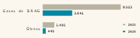
Colo do útero e colorretal estão entre os mais frequentes e são os que mais respondem a rastreamento. Prevenção é a parte do câncer que cabe na consulta de 10 minutos.
Oficina do ministério em 24 e 25/11 discutiu como proteger quem trabalha no sol: rurais, pescadores, garis, ambulantes, carteiros e equipes de emergência. O plano AdaptaSUS registra ondas de calor mais longas e intensas no país.
Menos casos graves não quer dizer vírus extinto: a circulação continua, e quem mais morre é idoso sem reforço. Comparar anos depende também da notificação.
| Passo | O que fazer | ⚠️ Pegadinha de prova |
|---|---|---|
| 1. Dor primeiro | Avaliar com escala (CPOT ou BPS no paciente que não fala) e tratar com opioide em analgossedação antes de acrescentar sedativo. | Agitação não é "falta de sedativo": dor, bexiga cheia, hipóxia e abstinência vêm antes. |
| 2. Alvo leve | Definir o alvo na prescrição: sedação leve (RASS de −2 a 0), salvo indicação de sedação profunda (SDRA grave com bloqueio, HIC, estado de mal). | Sedação profunda nas primeiras 48 h se associa a mais mortalidade e mais tempo de VM. |
| 3. Despertar e respirar | Interrupção diária da sedação acoplada ao teste de respiração espontânea (protocolo do estudo ABC). | O despertar diário sem o teste de respiração perde parte do benefício: os dois andam juntos. |
| 4. Escolher o sedativo | Preferir propofol ou dexmedetomidina a benzodiazepínico. A atualização SCCM 2025 sugere dexmedetomidina em vez de propofol quando se valoriza menos delirium (recomendação condicional). | Benzodiazepínico é a escolha na abstinência alcoólica e no estado de mal. O estudo A2B (JAMA 2025) não mostrou extubação mais rápida com agonista α2. |
| 5. Caçar o delirium | CAM-ICU ou ICDSC a cada turno; tratar a causa; mobilização precoce, sono, óculos, família (pacote ABCDEF). | Haloperidol de rotina não previne nem encurta o delirium (MIND-USA 2018, AID-ICU 2022). |
Conteúdo educativo. Siga o protocolo institucional.
Homem de 68 anos no 4º dia de VM por pneumonia, em midazolam e fentanil contínuos, RASS −4, "calmo". FiO₂ 35%, PEEP 6. Resposta: suspender a sedação de manhã e, se tolerar, fazer o teste de respiração. Trocar o midazolam por propofol ou dexmedetomidina, avaliar dor (CPOT) e, quando o RASS chegar a −3 ou mais, aplicar o CAM-ICU. Desatento e sonolento = delirium hipoativo: procurar causa, sentar no leito e chamar a família.
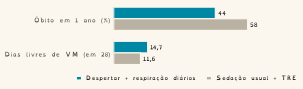
Etilista que agita no 2º ou 3º dia: tremor, sudorese e taquicardia. Aqui o benzodiazepínico é tratamento.
Rebaixamento sem causa após crise ou TCE: peça EEG antes de culpar a sedação.
Anticolinérgico, serotoninérgico (linezolida + ISRS + fentanil) ou abstinência de opioide: revise a prescrição.
| Passo | O que fazer | ⚠️ Pegadinha de prova |
|---|---|---|
| 1. Reconhecer | 4AT na admissão e a cada mudança: alerta, AMT4 (idade, data de nascimento, local, ano), meses ao contrário, início agudo ou flutuação. Ou CAM: início agudo + desatenção + pensamento desorganizado ou nível de consciência alterado. | A forma hipoativa é a mais comum e é confundida com depressão, cansaço ou "demência que piorou". |
| 2. Achar a causa | Infecção, fármacos, dor, retenção urinária, constipação, hipóxia, desidratação, sódio, glicose, abstinência, AVC. Exame físico completo, bexiga e reto incluídos. | Urina turva com bacteriúria sem febre nem sinais sistêmicos não explica sozinha o delirium (IDSA 2019): continue procurando. |
| 3. Revisar a prescrição | Critérios de Beers (AGS 2023): evitar benzodiazepínico, hipnótico "Z", anticolinérgico forte (prometazina, difenidramina, amitriptilina, oxibutinina) e meperidina; ajustar à função renal. | A prometazina "para dormir" é uma das causas mais comuns de delirium iatrogênico no idoso. |
| 4. Cuidar sem remédio | Orientação, relógio e calendário, óculos e aparelho auditivo, acompanhante, sono à noite, sair do leito, hidratar, evitar sonda e acesso desnecessários. | Contenção física aumenta agitação, queda e lesão; não é tratamento. |
| 5. Remédio só se necessário | Antipsicótico na menor dose e por curto prazo (até 1 semana, NICE) só se há angústia intensa ou risco para si ou para outros. | Evitar antipsicótico no Parkinson e na demência com corpos de Lewy. Benzodiazepínico só na abstinência de álcool ou de benzodiazepínico. |
Conteúdo educativo. Siga o protocolo institucional.
Mulher de 84 anos, 2º dia após cirurgia de fratura de fêmur: sonolenta, não diz os meses ao contrário, 4AT = 7. Recebeu prometazina à noite e morfina; não evacua há 4 dias e não urina há 8 h. Resposta: delirium com causas somadas. Ultrassom da bexiga (p. 10): 720 mL → sondagem de alívio. Suspender a prometazina, laxante, analgesia regular com paracetamol e menos opioide, óculos, família e sono à noite.
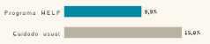
Início insidioso, atenção preservada no começo, sem flutuação de horas. As duas podem coexistir.
Humor triste com atenção e consciência preservadas; não flutua ao longo do dia.
Déficit focal, afasia ou rebaixamento súbito: imagem e, se preciso, EEG.
Com o transdutor convexo logo acima da sínfise púbica, faça o corte transversal (largura e profundidade) e o longitudinal (comprimento). O volume aproximado é comprimento × largura × profundidade × 0,52. Exemplo: 11 × 10 × 8 cm × 0,52 ≈ 460 mL. Volume de 300 mL ou mais em quem não consegue urinar sugere retenção; o corte para sondagem varia conforme o protocolo (muitos usam 400 a 600 mL no pós-operatório). Com sonda, ver o balão dentro de uma bexiga cheia indica sonda dobrada ou obstruída.
⚠️ Pegadinha: ascite, cisto de ovário e linfocele imitam a bexiga. Siga a imagem até a uretra e confirme que a estrutura muda de tamanho após a sondagem.
O efeito digitálico é esperado e não indica toxicidade: infradesnivelamento de ST côncavo, "em colher", QT curto e T achatada. A intoxicação mistura mais automatismo com mais bloqueio: extrassístoles ventriculares e bigeminismo, taquicardia atrial com BAV, FA que se torna regular e lenta (ritmo juncional), BAV e a TV bidirecional, quase característica. Náusea, visão amarelada e confusão no idoso completam o quadro. DRC, hipocalemia, hipomagnesemia, amiodarona e claritromicina elevam o risco. Arritmia grave, ou potássio acima de 5,0 mEq/L na intoxicação aguda, indica anticorpo antidigoxina (Fab).
⚠️ Pegadinha: nível sérico colhido menos de 6 h após a dose oral vem falsamente alto, porque a droga ainda está se distribuindo. Na intoxicação aguda, o potássio alto mede gravidade.
Com FR de 20, cada ciclo dura 3 s; inspiração de 1 s deixa 2 s para expirar: I:E de 1:2, o padrão habitual (1:1,5 a 1:3). Em volume controlado, o tempo inspiratório depende do fluxo e da pausa: 450 mL a 60 L/min (1 L/s) levam 0,45 s, mais a pausa. Na asma e na DPOC, prefira FR menor, fluxo maior e I:E de 1:3 ou mais longa para esvaziar o pulmão. A relação invertida exige sedação profunda e favorece auto-PEEP e hipotensão. No paciente que desperta, um tempo inspiratório maior que o "neural" (cerca de 0,8 a 1 s) provoca desconforto e assincronia.
⚠️ Pegadinha: "aumentei a FR para baixar a PaCO₂ e ela subiu": a expiração ficou curta, houve auto-PEEP e o volume efetivo caiu.
Fator da fórmula do volume vesical? 0,52.
ST "em colher" isolado significa? Efeito, não intoxicação.
FR 30 e Ti de 1 s dão qual I:E? 1:1.
Matemática. Em 24/11, a heise e a New Scientist relataram que Anthropic e OpenAI divulgaram, quase ao mesmo tempo, provas de VP ≠ VNP, uma questão central da complexidade algébrica. Dias antes, Levent Alpöge, matemático da Anthropic, usou o Claude numa prova da Hipótese de Riemann Generalizada em 17,4 milhões de linhas de Lean, verificada pela comunidade do Lean, segundo o blog de Scott Aaronson. Em 26/11, a R&D World noticiou que um agente do Gemini 4, do Google, alega seis provas num único dia. O jornal não verificou as provas.
Anthropic. Em publicação no X na quarta (25), o CEO Dario Amodei rebateu reportagem da Axios e classificou de "absurda" a ideia de que a empresa queira tirar o controle das mãos humanas (Al Jazeera e Forbes, 25 e 26/11).
OpenAI e Nvidia. A OpenAI anunciou a retirada do GPT-5.6, substituído pela família GPT-6.2 (36Kr, 26/11). O conselho da Nvidia reconduziu Jensen Huang ao cargo de CEO na segunda (23), 11 dias após a renúncia; a investigação independente continua (Nvidia, via dentro.de/ai).
Windows 11. A Microsoft vai levar os PCs automaticamente para a versão 26H2 (Adrenaline, 24/11) e diz ter liberado quase 900 MB de RAM ao otimizar os próprios aplicativos (Hardware.com.br, 26/11).
Apple e WhatsApp. O iOS 27.2.1 segue como versão pública; o 27.3 está em beta. A Apple pode ser multada na Coreia do Sul por atrasar recursos de IA no iPhone 16 (MacMagazine, 26/11). O WhatsApp liberou mensagens programadas com até 14 dias de antecedência e figurinhas com som, também no iPhone (Mobile Time, 25/11; Estadão, 26/11).
Invasões. A Fifa confirmou ataque cibernético com vazamento de dados pessoais (CNN Brasil, 26/11), e o gerenciador de senhas 1Password alertou clientes sobre uma invasão (Tecnoblog, 26/11).
Na matemática, o Lean confere cada passo da prova por máquina. Na medicina, não existe esse verificador: a resposta da IA precisa ser checada na diretriz e no protocolo da sua instituição.
Usa 1Password? Siga só o comunicado dentro do app oficial. E-mail pedindo senha-mestra "para proteger a conta" é golpe. Ative a verificação em duas etapas onde puder.
Mensagem programada do WhatsApp vira lembrete: escreva hoje o parabéns de domingo e agende. Uma tarefa a menos na memória de trabalho.
| # | Clube | P | J | V | SG |
|---|---|---|---|---|---|
| 1 | Flamengo 🏆 | 80 | 36 | 24 | +43 |
| 2 | Palmeiras | 74 | 37 | 21 | +35 |
| 3 | Cruzeiro | 66 | 36 | 20 | +9 |
| 4 | Fluminense | 63 | 36 | 18 | +15 |
| 5 | Athletico-PR | 57 | 36 | 16 | +9 |
| 6 | Bahia | 54 | 36 | 14 | +4 |
| 7 | Atlético-MG | 52 | 36 | 14 | +4 |
| 8 | Bragantino | 50 | 36 | 14 | +5 |
| 9 | Santos | 50 | 36 | 13 | 0 |
| 10 | São Paulo ⬆️ | 48 | 37 | 13 | +1 |
| 11 | Vasco | 47 | 36 | 13 | −5 |
| 12 | Coritiba | 45 | 36 | 12 | −11 |
| 13 | Vitória | 44 | 36 | 12 | −12 |
| 14 | Botafogo | 43 | 36 | 11 | −11 |
| 15 | Corinthians | 41 | 36 | 10 | −2 |
| 16 | Grêmio | 41 | 36 | 10 | −7 |
| 17 | 🔻 Mirassol | 41 | 36 | 10 | −10 |
| 18 | 🔻 Internacional | 38 | 36 | 9 | −8 |
| 19 | 🔻 Remo | 32 | 37 | 7 | −22 |
| 20 | 🔻 Chapecoense | 24 | 37 | 5 | −37 |
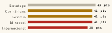
No Morumbis. O São Paulo abriu o placar aos 38 minutos do 1º tempo, após rebatida que bateu em Edson Fernando; Poveda empatou na etapa final, encerrando jejum pessoal de oito meses. Depois, erros na saída de bola do Remo originaram os gols de Ryan e o terceiro do Tricolor (ge, 26/11). Parte da torcida protestou contra a campanha.
Hoje, 20h. Fluminense × Cruzeiro, no Maracanã: o Cruzeiro tem de volta Gerson e Kaio Jorge, após suspensão. O Flu, com 965.069 pagantes em 2026, precisa de cerca de 35 mil para passar de 1 milhão no ano; até quinta de manhã, 27 mil ingressos estavam vendidos.
Flamengo. Gonzalo Plata sofreu trauma no cotovelo numa queda durante a folga e deve desfalcar o time contra o Coritiba, domingo, às 16h. No CBF Summit, o presidente Bap tratou como rumor a saída de Leonardo Jardim, defendeu reduzir o número de rebaixados, hoje quatro, e anunciou cortes de despesas em 60 dias, inclusive no futebol.
Na zona. O Botafogo perde Marçal, suspenso por dois jogos pelo STJD, para o duelo com o Bahia; o clube descartou a saída de Tite. O Grêmio oferece ingresso e transporte gratuitos a torcedores para o jogo com o Corinthians, domingo, em São Paulo.
Mercado. O Athletico abriu negociação com o CSKA pela venda de Viveros. O Fluminense encaminha a renovação de Cano até meados de 2027.
Seleção. O time de Ancelotti só volta a jogar em março de 2027. Contexto
Hoje 20h: Fluminense × Cruzeiro · Sáb 21h: Botafogo × Bahia · Dom 16h: Coritiba × Flamengo e Vitória × Santos · 18h30: Corinthians × Grêmio, Mirassol × Athletico-PR, Inter × Bragantino · 19h30: Atlético-MG × Vasco. 38ª: todos em 2/12, às 21h30, com Flamengo × Chapecoense e festa do título no Maracanã.
Faltam duas vagas no Z4. O Inter (38) chega a no máximo 44 pontos; Corinthians e Grêmio se enfrentam, então ao menos um deles não soma 3 pontos no domingo.
Fortaleza × Criciúma. O clube divulgou na quinta (26) a parcial de 28.456 ingressos vendidos e 16.820 check-ins de sócios, mais de 45 mil pessoas. Quatro setores estão esgotados. Na ida, o Criciúma venceu por 1 a 0; como teve campanha melhor, o Fortaleza sobe com vitória simples; empate ou derrota levam o Criciúma. Não há pênaltis (O Povo).
Copa do Brasil. Com a permanência do Vitória na Série A, o Fortaleza herdou a vaga do vice da Copa do Nordeste e entra na 3ª fase de 2027. Se subir, pula para a 5ª fase: pelos valores de 2026, a cota iria de R$ 1,53 milhão para R$ 2 milhões. Ceará, Ferroviário e Floresta já estão garantidos; a última vaga cearense é do campeão da Fares Lopes.
Ceará SC. O clube oficializou Alex de Souza, 47 anos, ex-Athletic-MG, com contrato até o fim de 2027, para Cearense, Copa do Nordeste, Copa do Brasil e Série B. O novo diretor, Israel Portela, informou folha de cerca de R$ 2 milhões por mês e definiu a situação financeira como "triste e constrangedor".
Fares Lopes (Sobral na semi). O Vila Real, de Sobral, Icasa e Ceará estão nas semifinais. O resultado de Tirol × Guarani de Juazeiro, marcado para quinta, às 19h, no PV, e o confronto das semis não foram localizados no fechamento. 72 h
Guarany e Junco. O Guarany de Sobral e o Vila Real disputam a Série B estadual em 2027; o Junco não aparece nas listas. Contexto
Fortaleza fora de campo. O dirigente Bruno Cals deixará o cargo após a Série B (ge, 26/11). O clube retoma o time feminino, as Leoas, com um novo patrocinador (O Povo, 26/11).
Nordeste. Domingo, Vitória × Santos no Barradão (16h); sábado, Botafogo × Bahia (21h), com o Bahia em 6º, 54 pontos. A Copa do Nordeste de 2027 vai de 24/3 a 13/6. Contexto
✅ Vila Real (Sobral) · ✅ Icasa · ✅ Ceará · ⏳ Tirol ou Guarani de Juazeiro (placar não localizado).
Quem vai de Sobral ao Castelão: água, protetor e pausa na estrada. Cheque o ingresso só no app oficial do clube: cambista em rede social é risco de golpe.
Liga Europa (26/11, 5ª rodada). Olympiacos 2 × 4 Milan, com o time italiano virando a partir dos 56 minutos; Viktoria Plzeň 4 × 0 Benfica; Juventus 4 × 1 Omonia; Crystal Palace 2 × 1 Real Sociedad, de virada; Celta 1 × 2 Bournemouth; Marseille 1 × 0 Levski; Sunderland 1 × 1 Jagiellonia; Lyon 0 × 0 Lillestrøm; Torreense 1 × 2 Celtic (t-online, placares finais).
Libertadores. A final é Palmeiras × Estudiantes, sábado (28), às 17h, no Centenário, em jogo único. É um reencontro com a final de 1968, no mesmo estádio. A delegação de Abel Ferreira já está em Montevidéu e adotou um lema inspirado no capitão Gustavo Gómez; taça, medalhas e bola já estão no estádio (ge, 26/11).
Copa Davis (Bolonha). A Espanha venceu a Áustria com Daniel Mérida e Rafael Jódar, e Alcaraz, escalado para as duplas, nem entrou em quadra. A Grã-Bretanha eliminou a Alemanha por 2 a 1. Hoje, Itália, tricampeã, × Tchéquia; sábado, Espanha × Grã-Bretanha; final no domingo (ge, 26/11).
Fórmula 1. Kimi Antonelli e a Mercedes já são campeões; Verstappen é 2º, mas cinco pilotos estão na briga pelo vice. Fernando Alonso faltou ao dia de mídia por infecção viral e deve voltar hoje. Leclerc admitiu clima ruim na Ferrari após o toque com Hamilton em Las Vegas. O brasileiro Rafael Câmara (Haas) faz seu 3º GP, numa pista inédita para ele; a Haas confirmou Oliver Bearman como seu colega em 2027. Para o ge, Lusail é boa chance de pontos para Câmara e Bortoleto.
Agenda do Catar (Brasília). Treinos livres hoje, 10h30 e 14h; classificação sábado, 15h; corrida domingo (29), 13h.
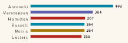
Mercedes 666 · Ferrari 517 · Red Bull 440 · McLaren 431 · Racing Bulls 114 · Alpine 87. Briga pelo 3º: Red Bull 9 pontos à frente da McLaren. Contexto
Na NFL, os Eagles viraram sobre os Cowboys em Arlington depois de estarem 21 pontos atrás no 3º período; a vitória saiu a 2 segundos do fim (ge, 26/11).
Seleção. Brasil × Japão é no domingo (29), à 1h55 de Brasília, em Hiroshima; o 2º amistoso é em 5/12, em Okayama. A atacante Gisele, 19 anos, do Grêmio, recebeu a primeira convocação. Pietra Tordin, 22, do Portland Thorns, treina com o grupo sem estar na lista formal: já atuou em amistoso pelos EUA e ainda pode optar pelo Brasil (ge, 26/11). A meia Ary Borges disse que o time passou a olhar os rivais "de igual para igual", rumo à Copa de 2027.
Visitante. A seleção feminina da Alemanha treina no Rio desde quinta, para amistosos contra Argentina e Peru e adaptação ao clima da Copa de 2027.
Clubes. O Corinthians anunciou Lucas Macorin, ex-base do Palmeiras, como técnico do feminino. O Cruzeiro renovou com 7 das 14 jogadoras com contrato no fim, de olho na Copa das Campeãs. O Fortaleza retoma as Leoas com novo patrocinador.
Vôlei. A Volleyball World confirmou o Brasil como sede de 4 etapas da VNL 2027, duas masculinas e duas femininas, em junho e julho; São Paulo é uma das cidades (ge, 25/11). Na Superliga feminina, o Sesc RJ Flamengo lidera após vencer o Osasco em 23/11; a CBV cobrou explicações do Suzano por salários atrasados.
Basquete. Gui Santos fez 22 pontos na vitória dos Warriors sobre os Kings por 129 a 110, sua melhor marca na temporada pelo 2º jogo seguido. Kevin Durant passou de 33 mil pontos na carreira, 5º da história, na vitória dos Rockets sobre os Suns por 116 a 104. No NBB, o Bauru anunciou a saída do pivô Anderson (ge, 24/11). 24 h
Jogo à 1h55 depois de plantão? Veja o compacto pela manhã. Programe um alarme único para o resultado e proteja o sono.
Sem jogos até março de 2027. Wesley, da Roma, disse ao ge que convidou Endrick para o clube italiano.
Dimorphos. Imagens divulgadas na quarta (26) revelam uma cratera gigante no asteroide que a missão DART atingiu de propósito em 26/9/2022, no primeiro teste de desvio de um corpo celeste (G1, Estadão e ICL Notícias). O impacto encurtou a órbita do asteroide em torno do companheiro Didymos; nenhum dos dois ameaça a Terra.
Marte. A NASA enfrenta problemas no jipe Perseverance e no orbitador Mars Odyssey, que ajuda a retransmitir dados da superfície (Exame, 26/11).
Ciência brasileira. Um experimento feito no espaço, com participação da NASA e de pesquisadores brasileiros, pode ajudar a detectar sinais precoces do Alzheimer (26/11). No mesmo dia, alunos receberam medalhas da Olimpíada Brasileira de Astronomia e Astronáutica (Governo Federal).
GTA VI. O jogo estreou em 19/11 com estimativa de 19,1 milhões de cópias e US$ 1,84 bilhão, segundo a Sensor Tower, citada pela Reuters; a Take-Two não confirmou (Tecnoblog). A Folha relata alta nas buscas por consoles nesta semana, e o Estadão, grupos que tentam um port ilegal para PC com ajuda de IA.
Cinema. Seguem em cartaz as estreias de quinta, como Entrando Numa Grande Fria e a animação Enfeitiçadas (Ingresso.com, 26/11).
Boato da semana. Um site especializado diz que o iPhone dos 20 anos, em 2027, pode ter edição limitada em cerâmica (Mundo Conectado, 26/11). É rumor, sem confirmação da Apple.
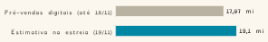
Em 27/11/1895, em Paris, Alfred Nobel assinou o testamento que criou o Prêmio Nobel. E em 27/11/1940 nascia Bruce Lee, em San Francisco.
Com as figurinhas com som do WhatsApp, um áudio-pegadinha famoso dos anos 2010 voltou a circular (26/11). Áudio surpresa no grupo do plantão: melhor não.
Mundo aberto gigante é ímã de hiperfoco. Alarme para a hora de parar e controle fora do quarto.
Ranking. Com dados até 25/11, o VW Polo lidera os carros de passeio com 8.868 emplacamentos (+29,6% sobre outubro), seguido de perto pelo VW Tera (8.749; +38,7%). Depois vêm Fiat Argo (7.023), VW T-Cross (6.956) e Fiat Mobi (6.549), que quase dobrou. Entre os comerciais leves, a Fiat Strada soma 10.464, à frente de Toro (3.814) e Saveiro (3.311) (car.blog.br, 26/11).
Ano. A Strada passou de 150 mil unidades e já supera todo o ano de 2025 (AutoRanking, 24/11); a Fiat a declara campeã de 2026 (AUTOO, 26/11). Os SUVs chegam a 45,1% dos emplacamentos, e os sedãs, a 4,9% (garagem 360, 25/11). A Fenabrave projeta alta de 12,8% em 2026, perto de 5,6 milhões de veículos (4/11).
Combustíveis. Na semana de 15 a 21/11, a ANP registrou gasolina a R$ 6,47 (−0,15%), etanol a R$ 4,29 (+0,94%), diesel S10 a R$ 7,26 (−0,41%) e botijão de 13 kg a R$ 115,29.
Recalls. No Brasil, a Stellantis convoca o Jeep Grand Cherokee 4xe 2023 e 2024: o atraso na abertura dos airbags laterais é corrigido com atualização de software gratuita (AutoPapo, 5/11). Nos EUA, a BMW chama carros com risco de incêndio mesmo desligados, e a Honda, 810 mil veículos com airbags Takata (Estadão e Mecânica Online, 24 e 25/11). Robotáxis da Waymo também passaram por recall (UOL, 25/11).
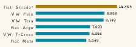
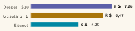
Divida o preço do etanol pelo da gasolina. Na média nacional: 4,29 ÷ 6,47 = 0,66. Abaixo de 0,70, o etanol costuma compensar; confira o preço do seu posto, que muda por cidade.
1) Qual o CET e o valor total pago? · 2) Emplacamento, frete e prazo de entrega estão por escrito? · 3) O bônus da troca bate com a Tabela Fipe? · 4) Há recall pendente pelo chassi? Lembre: o arrependimento de 7 dias do CDC (art. 49) vale para compra fora da loja, não na concessionária.
Golpe provável. O jogo só saiu para PS5 e Xbox. Arquivo de "versão PC" é a isca preferida para vírus e roubo de senhas.
Pressa fabricada. Relógio correndo serve para você não conferir CNPJ nem recebedor.
Falsa transportadora. Mensagens que imitam entregas estão entre os golpes mapeados na data. Rastreie só no site da loja.
Deepfake. A IA imita rosto e voz. Recomendação em vídeo não prova que a loja existe.
Link encurtado. Pode levar a página clonada. Digite o endereço da loja você mesmo.
Perfil falso. Perfis e anúncios falsos foram mais de 90% das ameaças da semana em 2025.
Enganados. Quase 70% dos consumidores dizem já ter se sentido enganados na Black Friday (Agência Brasil, 26/11). A agência e o Ministério Público do Espírito Santo divulgaram orientações na véspera.
IA no golpe. UOL e Times Brasil relataram em 26/11 que a IA torna mais difícil reconhecer lojas e mensagens falsas, sobretudo com Pix.
Números de 2025. Na semana da data, a Clavis contou 604 anúncios e 625 perfis falsos: 91,8% das ameaças detectadas (Estado de Minas, 19/11).
Procons. Goiás, Rio Grande do Sul (com unidade móvel em Porto Alegre), Santa Catarina e cidades como Cuiabá, Aracaju e Feira de Santana anunciaram fiscalização e orientação em 26/11.
Lema da Febraban. "Pare, pense e desconfie."
Compra pela internet ou telefone: 7 dias para desistir, com devolução do valor pago, inclusive frete (CDC, art. 49; orientação do Procon-SC, 26/11).
Horários. A Folha publicou em 26/11 que a data concentra mais ofertas logo após a meia-noite e o maior desconto médio à tarde. Horário bom não transforma compra desnecessária em economia.
Variação. O Procon do Espírito Santo pesquisou mais de 40 produtos de 5 a 10/11, em lojas físicas e on-line, e encontrou diferença de até 230% no preço do mesmo item entre estabelecimentos (Governo do ES).
Desconfiança. Em pesquisa do Reclame Aqui divulgada em outubro, 20% disseram que não gastariam nada na data; entre os que desistiram, 52% acham que as promoções não são reais e só 11% citaram falta de dinheiro (Times Brasil, 13/10).
Antecipação. Em Minas, as vendas do início da semana subiram 9,6% (O Tempo, 26/11). O Meio & Mensagem aponta GTA VI e calor como fatores que podem mexer nas vendas (26/11).
Atualizações. iPhone: iOS 27.2.1 (27.3 em beta). Windows 11: migração automática para a 26H2 e menos uso de RAM. WhatsApp: mensagens programadas e figurinhas com som. Chrome: o Google diz que o Gemini no navegador ficará mais leve (Digital Trends, 26/11). Google Maps com Gemini chega ao CarPlay (InsideEVs, 26/11). Atualize antes de comprar pelo celular.
| Situação hoje | Veredito |
|---|---|
| Item da lista, preço abaixo do histórico | ✅ Pode decidir |
| Console ou jogo "porque todo mundo comprou" | ⏳ Esperar 72 h |
| Desconto só no Pix, loja desconhecida | 🛑 Não comprar |
| Parcelado que não cabe no mês | 🛑 Não comprar |
| Oferta que some "em 10 minutos" | ⏳ Deixar sumir |
Silencie as notificações de lojas até segunda. Promoção que chega por alerta é a que o impulso compra.
Cansaço e sono baixam o freio do impulso. Não compre no intervalo do plantão nem depois da meia-noite: deixe no carrinho e decida descansado.
O que preciso · teto em reais · loja onde já comprei bem. O que não couber nessas três linhas espera até segunda.
Primeiro o SAC da loja, com protocolo anotado. Sem solução, consumidor.gov.br ou o Procon da sua cidade. Guarde e-mails, nota e prints numa única pasta do celular.
A doutrina, com fidelidade. A filosofia Bastter, criada por Maurício Hissa, parte de ideias simples: o patrimônio nasce da renda do trabalho; aporta-se um percentual fixo todo mês, sem tentar acertar a hora de comprar ou vender; mantém-se o que se comprou por muito tempo e busca-se "paz financeira", longe do excesso de notícias. A renda fixa serve para preservar o poder de compra. A doutrina também inclui ações; este jornal apenas registra isso e não trata do tema.
Prévia da inflação. O IPCA-15 de novembro subiu 0,22%, abaixo do que o mercado esperava, e acumula 4,64% em 12 meses. Alimentos subiram 1,51%, com o tomate em alta de 38,92%; passagem aérea, gasolina e energia elétrica caíram (IBGE, 26/11).
Tesouro (26/11). Com a inflação mais fraca e rumores sobre o comando da Fazenda, as taxas recuaram: os prefixados ficaram abaixo de 15% e o IPCA+ pagou até IPCA + 7,72% (Money Times e Beloud). Taxas mudam ao longo do dia.
Imposto. A tabela regressiva continua: 22,5% até 180 dias, 20% até 360, 17,5% até 720 e 15% acima. LCI e LCA seguem isentas de IR para pessoa física.
FGC. Garante até R$ 250 mil por CPF por instituição, com teto de R$ 1 milhão a cada 4 anos. O Tesouro Direto não depende do FGC: é dívida do governo federal.
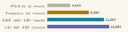
Quando a taxa de um prefixado cai, o preço do título já comprado sobe. Quem leva até o vencimento recebe a taxa contratada; quem vende antes pode ganhar ou perder (marcação a mercado).
A 1ª parcela chega antes da fatura da Black Friday. Separe primeiro as contas de janeiro e a reserva; o desejo fica para depois de 72 h.
Desconto de 30% em algo que não estava na lista é um gasto de 70%. Antes de pagar, pergunte: eu compraria isso pelo preço cheio na semana passada? Se a resposta for não, a economia é não comprar.
Carro é bem de consumo: perde valor todo ano e custa IPVA, seguro e manutenção. Compre pelo uso real, compare com a Tabela Fipe e consulte débitos, gravame e recall antes de pagar. Leilão: carro pela metade do preço em site desconhecido é sinal de alerta; confira o leiloeiro na Junta Comercial (Jucec, no Ceará) e o edital antes de qualquer Pix.
Registrato (BC): contas e chaves Pix no seu CPF. consumidor.gov.br e Procon para reclamar.
"Só hoje", "últimas unidades" e cronômetro na tela são urgência artificial. Espere 72 h.
Compra grande nunca depois do plantão: cansaço aumenta o impulso. Deixe o carrinho salvo e decida na folga.
Digitei o endereço da loja em vez de clicar no anúncio? · O CNPJ do recebedor no Pix é o da loja? · O preço era esse há 30 dias? · Sei o frete e o prazo de troca? · Pago no cartão (que permite contestar) em vez de Pix para loja nova?
Na quinta (26), o Ibovespa subiu cerca de 6%, a maior alta desde o 1º turno, e o dólar caiu a R$ 5,74, após relatos de que o presidente sondou um banqueiro para a Fazenda (CNN Brasil, 26/11).
Até o fechamento, a equipe do governo de 2027 não foi anunciada oficialmente; o que circula são sondagens relatadas pela imprensa, sem confirmação no Diário Oficial (pág. 2).
Novos ataques a petroleiros foram relatados perto de Ormuz em 26/11; sites de cotação publicaram o Brent entre US$ 91,77 e mais de US$ 96 no dia (Invezz, The Officer, El Folio).
A final da Libertadores, Palmeiras × Estudiantes, é sábado (28), às 17h, em Montevidéu (Conmebol). No GP do Catar, com o título já decidido, quatro pilotos disputam o vice (Canal GOAT, 26/11). O Procon alertou que a IA deixa os golpes da Black Friday mais convincentes, e a Serasa diz que sites falsos lideram as citações, com 53% (pág. 21).
Egito. O papiro de Edwin Smith, copiado por volta de 1600 a.C., descreve massas salientes na mama e anota, com uma franqueza rara, que para elas não havia tratamento. É um dos registros mais antigos do que hoje chamamos de câncer.
Grécia e Roma. Hipócrates chamou certos tumores de karkinos, caranguejo, talvez pelas veias que se espalham como patas. Celso traduziu para o latim cancer. Galeno atribuiu a doença ao excesso de bile negra, ideia que dominou a medicina por mais de mil anos.
O santo. São Peregrino Laziosi (1260–1345), frade servita italiano, tinha uma ferida na perna que seria amputada. A tradição conta que ficou curado depois de uma noite de oração. Canonizado em 1726, é invocado por doentes de câncer. Para a fé, é sinal; para a história, um relato devocional sem registro médico da época.
Brasil. Em abril de 2016, uma lei federal liberou a fosfoetanolamina sintética, a "pílula do câncer", sem registro na Anvisa. O STF suspendeu a lei em maio de 2016 e, em outubro de 2020, declarou-a inconstitucional. O estudo clínico paulista com a substância parou de incluir pacientes em 2017 por não mostrar benefício relevante.
Hoje. Segundo a OMS, de 30% a 50% dos cânceres poderiam ser evitados com menos tabaco e álcool, proteção solar, peso saudável e vacinas contra HPV e hepatite B.
| Vacina contra HPV e hepatite B | ✅ Previne câncer |
| Rastreio na idade indicada | ✅ Acha cedo |
| Acupuntura para náusea da quimio | 🟡 Ajuda como complemento |
| Oração e apoio espiritual | 🟡 Conforta; não trata |
| Babosa com mel "contra tumor" | 🔴 Sem prova; o látex irrita intestino e fígado |
| Graviola, laetrile ("B17") | 🔴 Só em laboratório; laetrile sem benefício em ensaio de 1982 |
| Fosfoetanolamina | 🔴 Sem benefício em estudo clínico |
Pergunte sem julgar sobre chás, garrafadas e suplementos: alguns interagem com quimioterapia e anticoagulantes. Respeite a fé, ofereça a capelania e registre o que a família trouxe.
Clermont. Em 27/11/1095, num campo da cidade francesa, Urbano II respondeu a um pedido de ajuda do imperador bizantino e conclamou cavaleiros a marchar para Jerusalém. Os relatos do discurso foram escritos anos depois e divergem entre si; o grito "Deus o quer" ficou na memória.
Banqueiros de capa branca. Fundados por volta de 1119 para proteger peregrinos, os Templários passaram a guardar valores e emitir cartas de crédito. O rei Filipe IV, da França, devia dinheiro à ordem.
Sexta-feira, 13/10/1307. Prisões em massa na França. Sob tortura, membros "confessaram" cuspir na cruz e adorar um ídolo, o Bafomé, nome que historiadores ligam a uma deformação de "Maomé" no francês antigo.
Chinon. Em 2001, a pesquisadora Barbara Frale localizou no arquivo do Vaticano um pergaminho de 1308: o papa Clemente V absolvia os líderes da acusação de heresia. A ordem foi suprimida em 1312 por decisão administrativa, sem condenação doutrinária. O Vaticano publicou o fac-símile em 2007.
A "maldição". O grão-mestre Jacques de Molay morreu na fogueira em março de 1314. A lenda diz que ele convocou papa e rei ao tribunal de Deus; os dois morreram naquele ano. As mortes são fato; a frase é, provavelmente, acréscimo de cronistas. Ligar o azar da sexta-feira 13 aos Templários é tese popular sem base documental.
Os Hospitalários nasceram de um hospital para peregrinos em Jerusalém, no século XI. Hoje, a Ordem Soberana de Malta não tem território, mas mantém relações diplomáticas com mais de cem Estados, é observadora permanente na ONU desde 1994 e atua em saúde e ajuda humanitária. Geopolítica sem mapa. Contexto
Confissão arrancada sob tortura não é prova. O processo dos Templários antecipou a caça às bruxas e lembra os "tribunais" das redes: acusação forte, defesa fraca e multidão convencida.
Nome popular de práticas voltadas a proteção e cura. Na Idade Média, a acusação de magia também foi arma política para justificar confiscos. Não é tratamento médico, e este jornal não ensina rituais.
Sex 27: Nossa Senhora das Graças (Medalha Milagrosa, aparições relatadas em Paris em 1830) · Dom 29: 1º Domingo do Advento · Seg 30: Santo André · Sex 4/12: Santa Bárbara; o Hanucá começa ao pôr do sol.
"Assassino" vem do árabe hashishiyyin, apelido dado aos nizaritas de Alamut. A história de que agiam sob haxixe é, provavelmente, lenda difundida por viajantes como Marco Polo.
Em que cidade foi convocada a Cruzada? O que revelou o pergaminho de Chinon? Por que a Ordem de Malta é "geopolítica sem mapa"?
Egito · Livro dos Mortos, cap. 125
"Não diminuí a medida de grãos nem falsifiquei o peso da balança."
Diante de Maat, o morto declarava ter pesado com justiça. O coração ia para a balança depois.
Bíblia · Provérbios 11:1
"A balança enganosa é abominação; o peso justo é o seu prazer."
Para os hebreus, roubar no peso ofendia a Deus e ao próximo ao mesmo tempo.
Alcorão · 17:35
"Dai a medida completa e pesai com balança exata."
A honestidade no mercado aparece como parte da fé, não como detalhe comercial.
Confúcio · Analectos 4:16
"O nobre entende o que é justo; o pequeno, o que dá lucro."
O lucro não é proibido; o problema é quando ele vira a única régua.
Aristóteles · Ética a Nicômaco, V.5
"O dinheiro é a medida que torna as coisas comensuráveis."
Sem medida comum e proporção, diz ele, a troca deixa de ser justa e a cidade se desfaz.
Índia · Arthashastra, II.19
"O superintendente mandará fazer balanças e pesos."
O tratado de Kautilya previa inspetor de balanças e multas a quem pesasse errado: um "Inmetro" antigo.
Nenhuma das seis tradições condena o comércio. Todas exigem a mesma coisa: que o peso usado para vender seja o mesmo usado para comprar. Hoje, a balança enganosa tem nome novo, "metade do dobro": o preço sobe nas semanas anteriores e o desconto é calculado sobre ele. No hospital, a justa medida é pesar o paciente em vez de "estimar no olho", somar o que realmente entrou e saiu e anotar a hora verdadeira. Honra, aqui, é a mesma régua para mim e para o outro.
Em 1799, a França depositou nos Arquivos Nacionais um metro e um quilo de platina, com o lema "para todos os tempos, para todos os povos". Em 2019, o quilograma deixou de depender de um objeto e passou a ser definido pela constante de Planck.
Em que assunto você usa um peso para julgar os outros e outro para julgar a si? Comece igualando um só.
Vem do latim bilanx, "de dois pratos": bi, dois, e lanx, prato. A própria palavra pede equilíbrio entre os lados.
Estimar é ponto fraco do cérebro com TDAH: tempo, dinheiro e quantidade. Medir vence estimar. Cronômetro para a tarefa, extrato para o gasto e balança de verdade para o paciente.
Antes de pagar hoje, anote ao lado do item o preço de 30 dias atrás. Sem histórico, sem compra.
O Código de Defesa do Consumidor proíbe publicidade enganosa (art. 37), obriga a cumprir a oferta (art. 30) e garante 7 dias para desistir de compra feita fora da loja (art. 49). O decreto do comércio eletrônico (7.962/2013) exige nome, CNPJ e endereço do vendedor no site. Reportagens desta semana alertam para Pix falso, sites clonados com IA e a velha "metade do dobro".
Tarefa dividida "de cabeça" sempre parece injusta para alguém. Uma lista visível na geladeira, com nome e dia, mede o trabalho de cada um e acaba com a discussão sobre quem faz mais.
| Situação | Saída honrada |
|---|---|
| "De R$ 2.000 por R$ 999" | Conferir o histórico de 30 a 90 dias |
| Pix pede nome diferente da loja | Cancelar e comprar pelo site oficial |
| Paciente sem peso registrado | Pesar ou anotar como estimado |
| Esqueceu de registrar na hora | Registro tardio, com as duas horas |
| Vendeu com defeito sem saber | Trocar ou devolver o dinheiro |
Se a outra pessoa visse a balança, ela concordaria com o peso? Se a resposta for "não", ainda dá tempo de corrigir.
A memória de trabalho falha no plantão; o papel, não. Um bloco de pendências no bolso, com hora ao lado de cada item, protege o registro e o paciente.
Escolha uma conta recorrente (assinatura, plano, mensalidade) e compare o valor cobrado com o contratado. Se houver diferença, peça a correção por escrito. Medir o próprio dinheiro também é honra consigo mesmo.
Do latim iustus, ligado a ius, direito. O justo é o que está de acordo com a regra comum, a mesma para todos.
Que promessa de preço, de prazo ou de presença você fez esta semana e ainda pode cumprir hoje?
O número. O INCA estima 781 mil casos novos de câncer por ano no Brasil de 2026 a 2028; o de pele não melanoma é o mais frequente. No Ceará, foram mais de 10 mil diagnósticos desse tipo entre 2023 e 2025, segundo levantamento publicado pelo O Povo em janeiro.
O sol. Perto da linha do Equador, o índice ultravioleta chega a níveis extremos perto do meio-dia em quase todo o ano. O básico funciona: filtro com FPS 30 ou mais, reaplicado a cada 2 horas no sol ou depois de suar; chapéu de aba larga, manga comprida e sombra entre 10h e 16h.
Calor e fumaça. O Ceará teve o novembro com mais focos de calor desde 2005, e a Funceme diz que o El Niño "muito forte" deve ter efeitos no estado até 2027. Em dia de fumaça, janela fechada à tarde e plano de crise à mão para quem tem asma ou DPOC.
TDAH e prevenção. Exame de rastreio não dá recompensa imediata, e por isso é a tarefa que o cérebro com TDAH mais adia. A saída é marcar no mesmo dia em que lembrar, com alarme duplo e alguém que acompanhe.
Os cinco grandes. Não fumar, beber menos, manter peso e atividade física, vacinar contra HPV e hepatite B e fazer os rastreios na idade certa.
| Filtro solar todo dia | ✅ Menos câncer de pele em ensaio |
| "Pele morena não queima" | 🔴 Risco menor, não zero |
| Bronzeado protege | 🔴 Bronzeado já é dano |
| Café causa câncer | ✅ Sem relação: IARC tirou da lista em 2016 |
| Bebida muito quente, acima de 65 °C | 🟡 Provável risco de esôfago |
| Celular causa tumor cerebral | ✅ Revisão de 2024 sem associação |
Se a sua sombra está mais curta que você, o sol está forte: procure abrigo. Funciona sem aplicativo e serve para criança entender.
Filtro solar ao lado da escova de dente. O hábito novo pega carona num hábito antigo.
Assimetria · Bordas irregulares · Cores variadas · Diâmetro acima de 6 mm · Evolução (cresceu, coçou, sangrou). Ferida que não cicatriza em 4 semanas também merece consulta. Em dezembro, a campanha Dezembro Laranja reforça o alerta.
1 minuto: filtro no rosto, orelhas e nuca. 1 minuto: um copo d'água. 1 minuto: abrir a agenda e marcar o exame que está atrasado. Se não souber qual é, pergunte na próxima consulta.
Antes do amanhecer, no leste, Vênus é o ponto mais brilhante, com Mercúrio, Marte e Júpiter no mesmo céu. Ao anoitecer, Saturno aparece alto. A Lua mingua depois da cheia de terça (24) e nasce cada noite mais tarde; o quarto minguante é em 1º/12. A chuva de meteoros Geminídeas tem pico em 13 e 14/12.
É safra do caju no Ceará, de setembro a dezembro. Curiosidade: o "caju" que se come é um pseudofruto; o fruto verdadeiro é a castanha. Ela nunca deve ser quebrada crua em casa: a casca tem um óleo que queima a pele. Torrar é trabalho para a indústria.
Guias da ADDitude e da CHADD para casais com TDAH repetem três regras: orçamento de presentes combinado antes de dezembro, lista única e uma conversa curta e marcada por semana, sem culpa. Quem tem TDAH fica com tarefas de execução rápida; o outro não precisa virar fiscal.
O famoso "teste do marshmallow" foi repetido em 2018 com mais crianças, e o efeito ficou bem menor, muito ligado ao ambiente da família. Outro estudo, de 2013, mostrou que crianças esperam mais quando o adulto cumpre o que promete. Autocontrole se ensina com promessa cumprida.
Uma conta só para dezembro, com valor fixo. Acabou o saldo, acabou a compra. A regra decide por você.
Sábado antes das 5h: olhe o leste e tente contar os planetas. Domingo começa o Advento: uma boa hora para combinar, em família, o que realmente importa no fim do ano. Simples, de graça e bom para o sono.
Qual planeta brilha mais na madrugada? Por que não quebrar castanha crua? Qual temperatura o Procel recomenda para o ar-condicionado?
A versão de 26/10 deu memória à Siri e novos idiomas. Revise nos Ajustes da Siri o que ela guarda e apague o que não quiser que fique salvo.
Ajustes › Face ID e Código › ative a proteção. Fora de casa, mudar a senha do Apple ID exige o rosto e uma espera de segurança. Vale ouro em dia de compra na rua.
A prévia KB5132057 (19/11) testa as novidades de novembro, como Explorador mais rápido e recuperação mais simples. No PC de trabalho, espere a atualização oficial de 8/12.
Na tela de confirmação do Pix, o recebedor precisa ser a loja, com o CNPJ dela. Nome de pessoa física ou de outra empresa: cancele. Digite o endereço da loja em vez de clicar em anúncio.
Desde 2024, o Google mede a resposta ao toque pelo INP; a meta é abaixo de 200 ms. Teste grátis no PageSpeed Insights e corte scripts que travam o botão de compra.
A Amazon KDP pede que o autor informe texto, imagem ou tradução gerados por IA; uso só como assistente não precisa. Nunca venda como "feito à mão" o que a IA fez.
Tarefa chata rende mais com alguém ao lado, presencial ou por vídeo, cada um no seu trabalho. Marque 25 minutos e comece junto.
No Dia Nacional de Combate ao Câncer, confira com seu médico quais exames de rastreio cabem na sua idade e marque o que estiver atrasado.
Órgãos oficiais (gov.br, STF, Congresso, BC, INCA, Funceme), agências e veículos (CNN Brasil, G1, Folha, Estadão, O Povo, Diário do Nordeste, ge, Lance!), OMS, Opas, ADDitude, CHADD, 9to5Mac, Microsoft e as fontes datadas no rodapé de cada página.
Black Friday hoje: lista, teto, histórico de preço e 72 h. No sol do sertão: filtro e sombra. Contra o câncer: prevenção e rastreio, não "pílula milagrosa".
Em 5 minutos: confira o preço de 30 dias do único item da lista e deixe o filtro solar ao lado da escova de dente.
Pagar Pix a nome diferente da loja, trocar tratamento por remédio "natural" e instalar prévia do Windows no PC de trabalho.
Jornal Diário 360 · Radar 360 Circunstancial · edição nº 021 · sexta-feira, 27/11/2026 · 32 páginas · fechamento na noite da véspera (26/11). ALDENIR ROCHA DE OLIVEIRA FILHO · PROJETO 360X. Produção: Agente Editorial 360, com o Claude (Anthropic). Gráficos, tirinhas e ilustrações originais; nenhuma foto de terceiros. Notícias resumidas com fontes datadas. Conteúdo de saúde educativo: siga o protocolo institucional. Conteúdo financeiro educativo: o jornal não é consultor financeiro. O jornal não toma partido. Correções: informe pela página do Jornal 360 no site.
Dois estudos de novembro mudam o jeito de olhar o diagnóstico: o rótulo da consulta nem sempre coincide com a biologia. No Senado, um projeto de política nacional para neurodivergentes está aberto a emendas até terça (1º/12).
24/11 Três biotipos (Stanford). Uma análise com inteligência artificial de milhares de ressonâncias funcionais do estudo ABCD, que acompanha mais de 11 mil crianças nos EUA desde os 9–10 anos, achou três padrões cerebrais em quem tem TDAH, ansiedade ou os dois. Cada padrão envolve circuitos diferentes, e uma criança com qualquer um dos diagnósticos pode cair em qualquer biotipo. Publicado na Nature Mental Health. Ainda é pesquisa, não um exame de consultório.
05/11 Genes do autismo em rede. Pesquisadores do Boston Children's Hospital (Nature) alteraram 18 genes ligados ao autismo em células que dão origem a neurônios. Mudanças diferentes produziram padrões parecidos de atividade genética, a chamada convergência. Reguladores como CHD8 e REST aparecem no centro da rede, e o gene ZFX, do cromossomo X, agiu de forma diferente em células masculinas e femininas. Não muda o diagnóstico nem traz tratamento novo.
17/11 Condição do corpo inteiro. No congresso da Society for Neuroscience, trabalhos ligaram o TDAH a um padrão próprio de respiração, à sensação crônica de "estar atrasado", a menos ferro em regiões do cérebro de crianças e a menos consumo problemático de álcool com o tratamento. O moderador resumiu o TDAH como condição sistêmica.
29/10–04/11 Fumaça, perfis e jogos. Na JAMA Pediatrics, a exposição da gestante à fumaça de incêndios florestais (PM2,5) se associou a mais risco de autismo e TDAH nos filhos, um alerta num Ceará com 4.567 incêndios em vegetação até outubro. Na BMJ Mental Health, o perfil de adultos diagnosticados autistas mudou desde 2010 no Reino Unido e na Suécia. Associação não prova causa.
| 🔴 "TDAH é só falta de atenção" | Não. Pesquisas de 2026 ligam o TDAH ao sono, à respiração, à noção de tempo e à regulação emocional. |
| 🟡 "Fumaça de queimada causa autismo" | Há associação num estudo dos EUA, sem prova de causa. Proteger gestantes da fumaça faz sentido por muitos motivos. |
| 🔴 "Vacina causa autismo" | Não. É uma das hipóteses mais testadas e descartadas da medicina. |
| ✅ "Dinheiro pesa nos casais com TDAH" | Sim. Quem cuida das contas do dia a dia tende a carregar mais estresse (ADDitude). |
Conteúdo educativo: estudo não é conduta. Decisões de diagnóstico e tratamento são com o seu médico.
💸 Ferramenta do dia: conversa de dinheiro a dois, sem briga (ADDitude).
Por que agora: os Bombeiros somaram 4.567 incêndios em vegetação de janeiro a outubro, com Sobral em 2º lugar, 294 (O Povo+, 4/11). Em 11/11, o governador disse que 2027 pode trazer seca "muito intensa" (Diário do Nordeste).
Quem é: ONG cearense de conservação da Caatinga, com reservas, brigadas e tecnologias de água para o semiárido.
Como ajudar: PIX pelo QR; o app deve mostrar Associação Caatinga, CNPJ 02.885.544/0001-03.
✔ Chave (CNPJ) conferida no site oficial em 26/11/2026 (noite)
Por que agora: a Semana Nacional do Doador vai até domingo (29/11), com programação também nas unidades do interior (Hemoce, 18/11). Hemocentros relatam queda de doações nas festas de fim de ano (Hemopa, via O Liberal, 18/11).
Quem é: hemocentro público do Estado (Sesa), com unidade regional em Sobral.
Como ajudar: 16 a 69 anos, mais de 50 kg, bem alimentado e com documento oficial com foto.
Doação de sangue é gratuita: ninguém cobra PIX para agendar
Por que agora: 23/11 foi o Dia Nacional de Combate ao Câncer Infantil (Lei 11.650/2008), data que lembra o diagnóstico precoce e o apoio às famílias.
Quem é: acolhe crianças e adolescentes com câncer e suas famílias; é mantido pela Associação dos Missionários da Solidariedade.
Como ajudar: PIX pelo QR; o app deve mostrar a Associação dos Missionários da Solidariedade, CNPJ 11.368.624/0001-82.
✔ Chave (CNPJ) conferida no site oficial em 26/11/2026 (noite)
Por que agora: o UNICEF estima 347 milhões de crianças em quase 100 países expostas a secas ou enchentes até dezembro (6/10). A NOAA via 63% de chance de um El Niño muito forte entre novembro e janeiro (Diário do Nordeste, 11/11).
Quem é: agência da ONU para a infância, com escritório no Brasil.
Como ajudar: só pelo site oficial do UNICEF Brasil.
⚠ Sem chave PIX na página oficial: doe só pelo site (conferido em 26/11/2026)
| Quem | O que divulgou | Fonte e data | 📸 Comprovação | |
|---|---|---|---|---|
| Instituto Myra Eliane · Caucaia e Cascavel (CE) | Relatório de impacto: mais de 100 mil pessoas atendidas em 10 anos, 37 mil no biênio 2023–2025, em educação infantil, qualificação e cultura. | Diário do Nordeste, 13/10 | ||
| DOM Incorporação · Juazeiro do Norte (CE) | Entregou em 12/11 um triciclo elétrico à associação de catadores do Engenho do Lixo, por acordo com o MPCE (compensação ambiental). | MPCE, 17/11 | ||
| Samu Metropolitano do Recife · Samu Solidário | 16ª campanha de Natal: brinquedos, alimentos, fraldas e higiene até 30/11, para mais de 4 mil crianças. | Portal de Prefeitura, 14/11 | ||
| Natal Sem Fome · Campinas (SP) | 24 pontos de coleta até 18/12; alimentos vão ao Banco Municipal, que abastece 120 entidades. Estreia o Panetone Solidário. | Correio da Manhã, nov/2026 |
Reprodução do que cada fonte divulgou, sem conferência independente; não é endosso nem publicidade paga. 📸 O QR abre a página da fonte, com fotos ou relato; ícones originais, sem imagens de terceiros. Contatos pessoais citados nas fontes não são reproduzidos.
Ajuda de Boa: causas com PIX conferido na fonte.
Auditoria das Coisas 360X: sugira uma auditoria.
Hoje (27) é o último dia do desconto de 100% em multas e juros do REFIS 2026, com atendimento na Praça de Cuba das 8h às 12h; o programa segue até 23/12 com descontos menores (Prefeitura, 26/11). Pague só por guia oficial da Prefeitura.